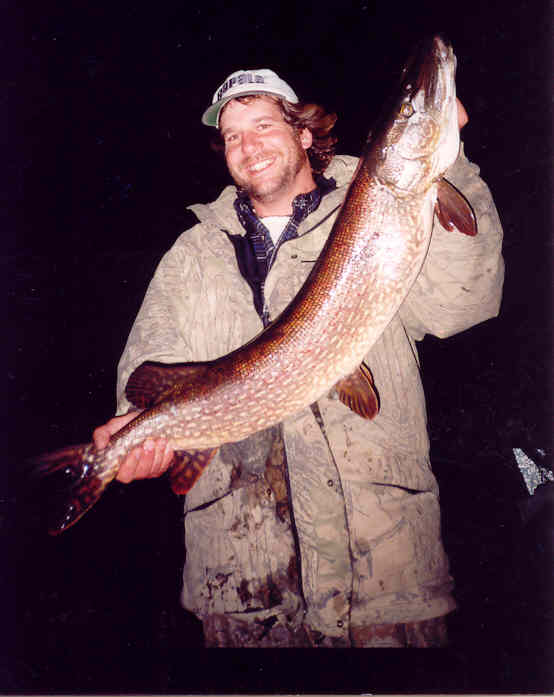
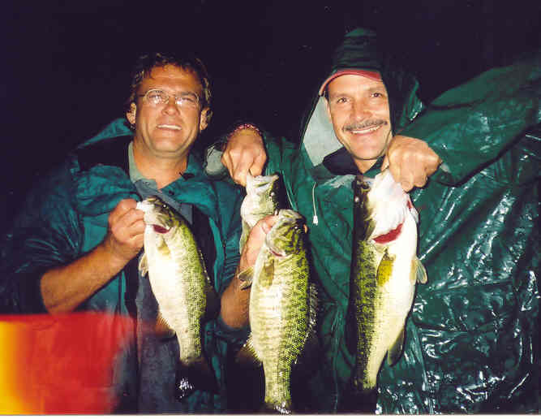
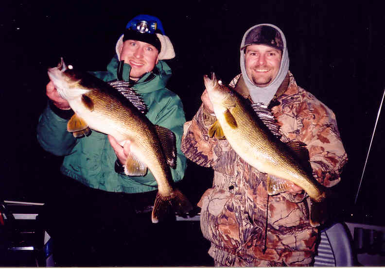
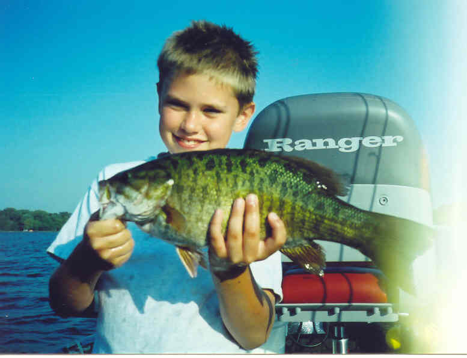
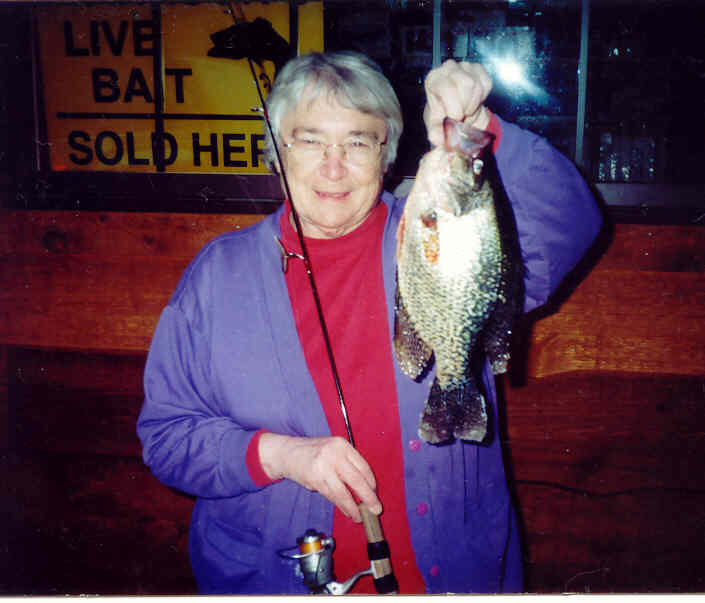
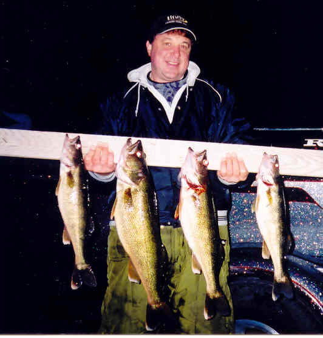

|
The Pier Photo
Gallery
Please note: All photos are of
fish caught in Lake Geneva, Wisconsin
while on outings with The Pier fishing guide service. Please
note: You will need to scroll down to the end of the page and
click the link that says "click here to go to the next photo
gallery page" to advance to the next page of photos. Repeat
on each page. |
|  |
 |
| John with one large Northern
Pike |
Smiling, Satisfied Customers,
Steve & Jim with these bass. |
| |
|
|  |
 |
Customers, Paul Mueller
& Jeff Sanders -
All Smiles with these trophy walleyes! |
Small boy, big
smallmouth bass! |
| |
|
|  |
 |
| Lois "Mickey"
VanDresser, manager, of The Pier with a nice crappie caught ice fishing. |
Customer, Michael Urban
on his first outing with our guide service caught these fine Walleye. |
|
CLICK
HERE TO GO TO THE NEXT
PHOTO GALLERY PAGE HOME
|